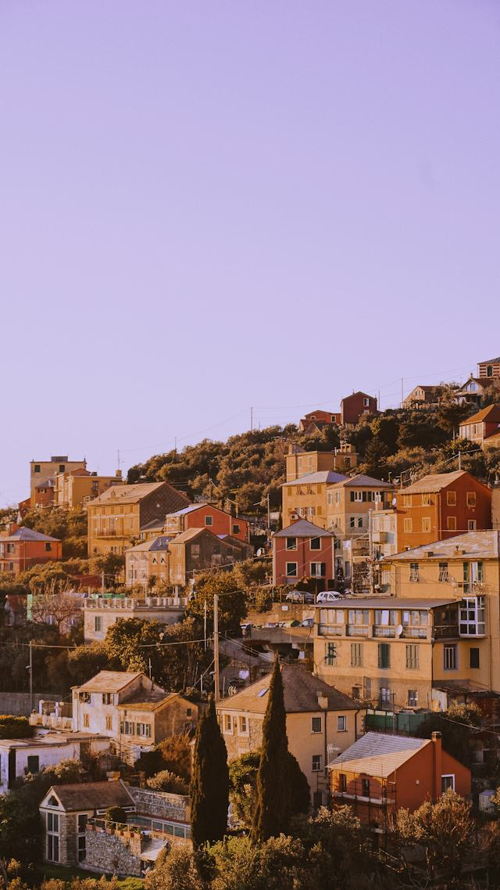
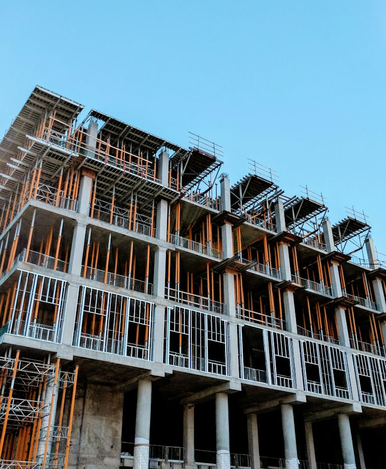
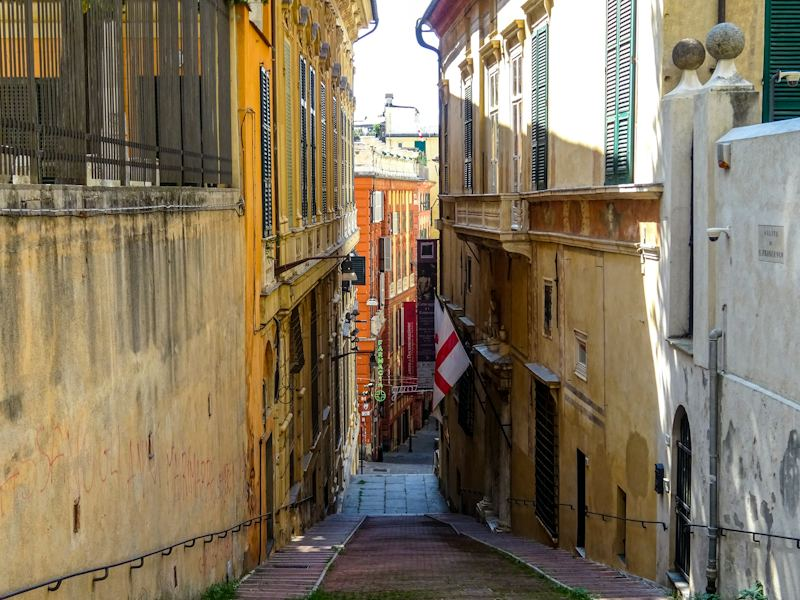
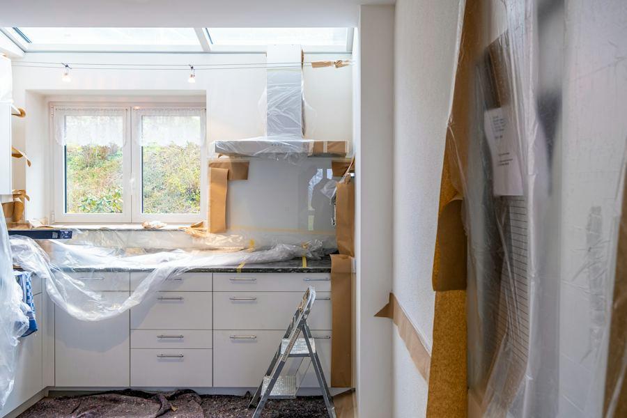

Genova, dal 1995
Costruiamo a Genova dal 1995.
Edilgaggero S.r.l. realizza fabbricati per civili abitazioni e industriali. Sede a Cornigliano, Via Guido Agosti 72.
Cornigliano · 16152 Genova
- 31 annidi attività, dal 1995
- 5,0 su Google3 recensioni
- S.r.l.attiva, sede a Genova
- CorniglianoVia Guido Agosti 72
01 · Cosa costruiamo
Case, capannoni e lavori sul costruito.
L'attività registrata è la costruzione di edifici residenziali e non residenziali. Palazzine, case e capannoni, con una squadra propria.
- 01
Civili abitazioni
Palazzine e case, dalle fondazioni al tetto.
- 02
Fabbricati industriali
Strutture per lavorare: capannoni, magazzini, laboratori.
- 03
Ristrutturazioni
Lavori su edifici esistenti, dentro e fuori.
- 04
Impermeabilizzazioni
Tetti, terrazzi e coperture che tengono l'acqua fuori.
02 · Dal disegno al palazzo
Prima si disegna. Poi si costruisce, piano per piano.
- 01
Progetto
Il disegno, i calcoli, i permessi.
- 02
Fondazioni
Lo scavo e la base che regge tutto.
- 03
Struttura
Pilastri e solai, un piano alla volta.
- 04
Finiture
Facciata, impianti, interni. Poi le chiavi.
03 · Cantieri
Genova si costruisce in salita.
Strade strette, terreni in pendenza, palazzi uno addosso all'altro. Qui un cantiere va organizzato bene prima di aprirlo.




Foto illustrative: qui andranno le foto dei vostri cantieri.
04 · L'impresa
Una S.r.l. genovese, dal 1995 a Cornigliano.
Edilgaggero è un'impresa edile registrata a Genova, con la sede in Via Guido Agosti 72, nel ponente della città. Costruisce fabbricati per civili abitazioni e industriali e lavora con i propri dipendenti.
Su Google ha il punteggio pieno: 5,0 su 5, con 3 recensioni.
05 · Come si parte
Quattro passi, dal primo contatto.
- 1
Telefonata
Ci raccontate il lavoro e dove si trova.
- 2
Sopralluogo
Si vede il terreno o l'edificio, si misura.
- 3
Preventivo
Scritto, con le voci di lavoro e i tempi.
- 4
Cantiere
Si apre, si segue, si consegna.
06 · Contatti
Un edificio da costruire o da sistemare?
- Telefono010 651 8331
- SedeVia Guido Agosti 72, 16152 Genova
Apri in Google Maps